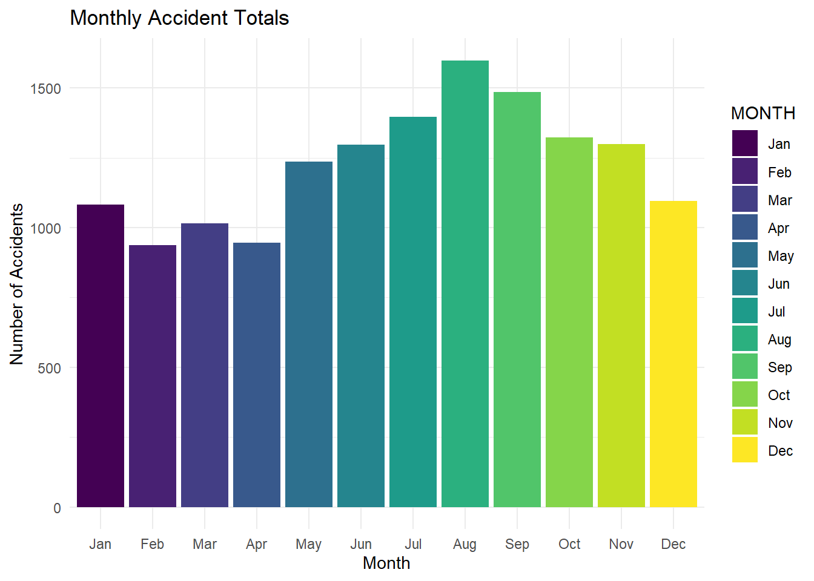
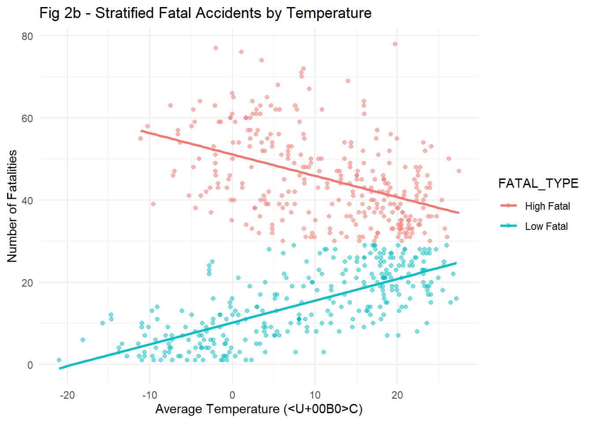
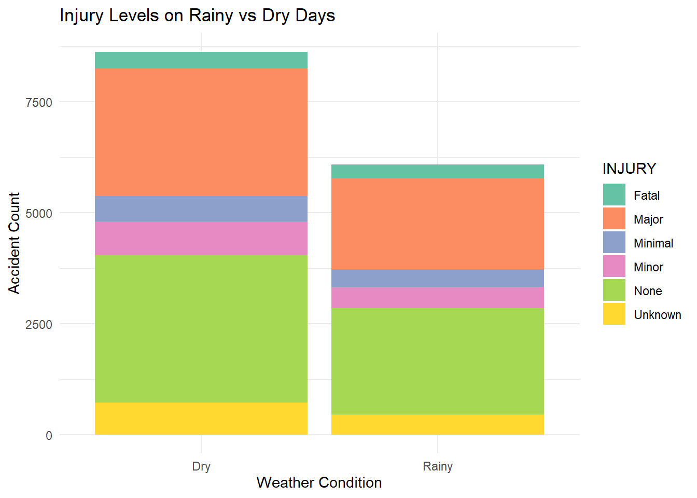
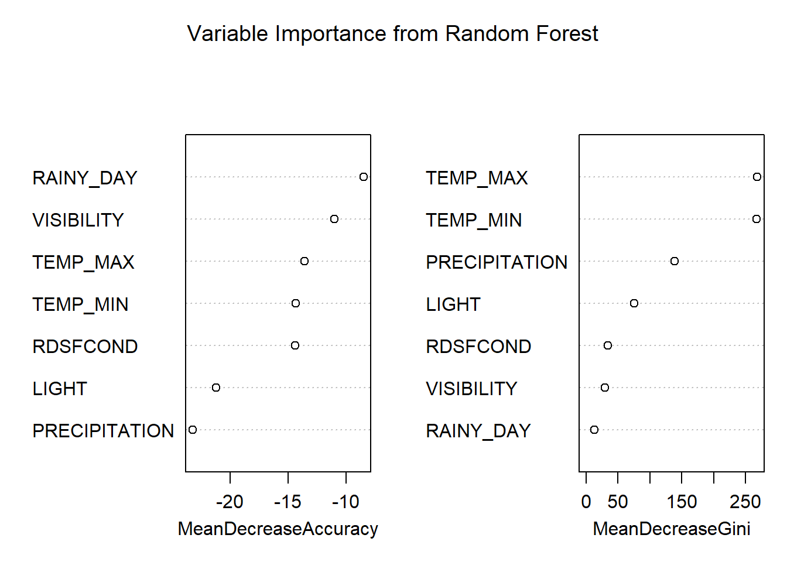

This project investigates how weather conditions—specifically temperature and precipitation—impact the frequency and severity of traffic accidents in Toronto between 2006 and 2023. Using data from the Toronto Police Service and ERA5 reanalysis archive, we merged accident records with historical weather data to assess correlations and predictive potential.
| Total Observations | Date Range | Variables |
|---|---|---|
| 14711 | 2006-01-01 to 2023-12-28 | 15 |

Accidents increase in summer months, peaking in August. This may reflect higher road usage.

There is a mild positive association between temperature and the number of fatalities.

Rainy days have fewer total accidents but similar injury severity distribution as dry days.

This suggests that while temperature-related variables are important structurally in the model, rain indicators and visibility are more directly tied to predictive accuracy.
While weather conditions do show some correlation with traffic accident frequency and severity, the predictive power of weather-related variables alone is limited. Future work should consider integrating traffic volume, driver behavior, and spatial patterns to improve predictive accuracy.
Visit the interactive visualizations page for dynamic maps and filterable charts.